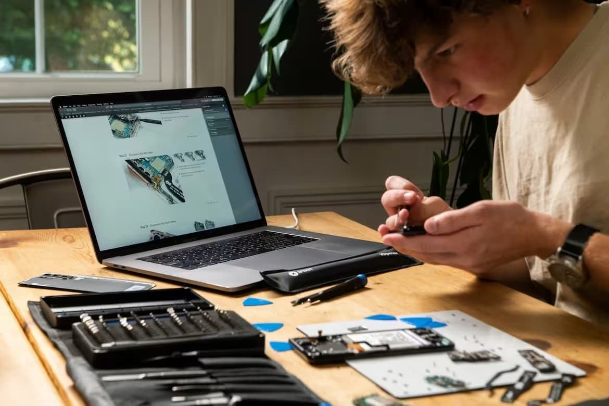
Пошаговые руководства по ремонту
Узнайте, как исправить что-либо с помощью простых и понятных инструкций, созданных настоящими ремонтниками.
Найти руководствоПрисоединяйся к сообществу ремонтников — Создай аккаунт
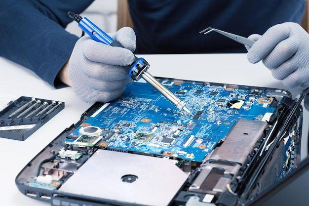
Получите необходимые инструкции, используя качественные запчасти и инструменты для ремонта, а также опыт авторитетного сообщества.

Узнайте, как исправить что-либо с помощью простых и понятных инструкций, созданных настоящими ремонтниками.
Найти руководство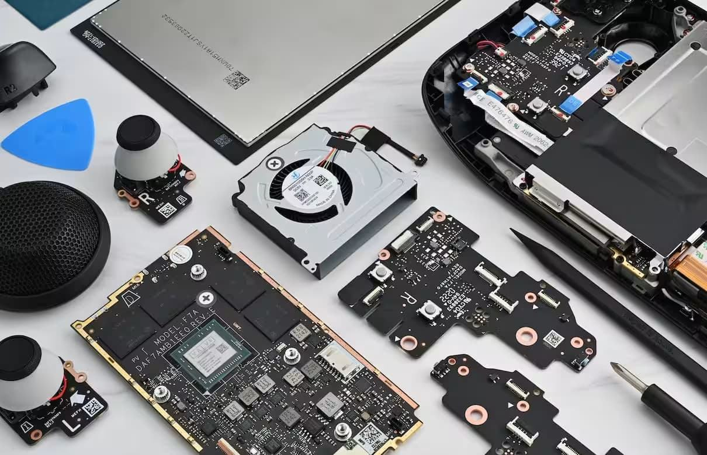
Точные инструменты и тысячи деталей для выполнения работы, подкрепленные нашей пожизненной гарантией.
Делайте покупки в нашем магазине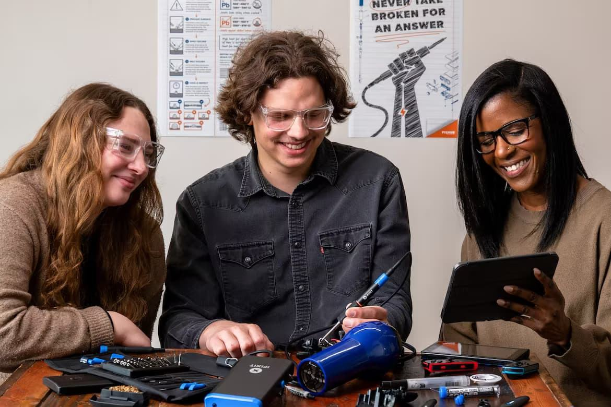
Никто не знает, как починить все, но каждый знает, как починить что-нибудь.
Починить мирКаждый день мы помогаем тысячам людей чинить их вещи. Каждый раз, когда вы что-то чините, вы помогаете планете.
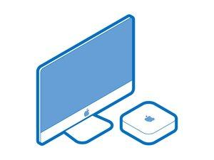
Пошаговые инструкции по разборке, замене аккумуляторов, экранов и апгрейду ноутбуков и компьютеров Apple.
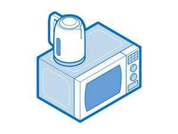
Понятные руководства по диагностике и самостоятельному ремонту стиральных машин, кофеварок, пылесосов и другой техники для дома.
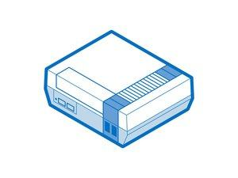
Схемы чистки от пыли, замены термопасты и ремонта геймпадов и приставок разных поколений.
Инструкции по восстановлению смартфонов, планшетов, наушников и портативных гаджетов своими руками.
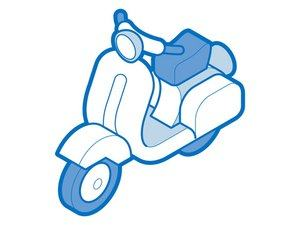
Руководства по обслуживанию и мелкому ремонту скутеров, электросамокатов, велосипедов и автоаксессуаров.
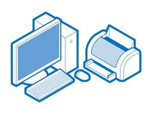
Помощь в сборке ПК, замене видеокарт, материнских плат, систем охлаждения и периферии.
Rapier предлагает полный контроль над ремонтом благодаря комплексному рабочему процессу, адаптированному под весь ваш ремонтный бизнес, в одном месте.
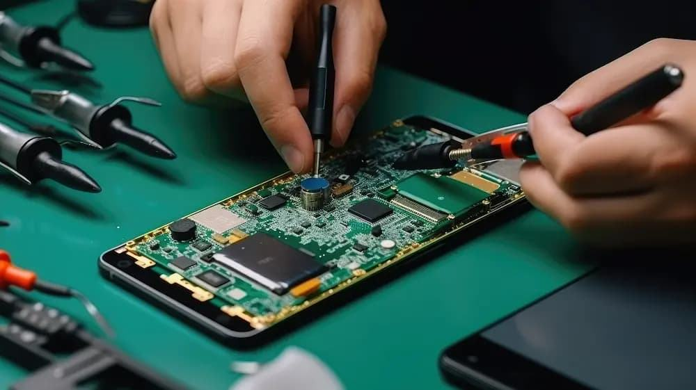
Создавайте заявки на ремонт, отмечайте срочные заказы, заказывайте запчасти и автоматизируйте складской учет.
Отслеживайте этапы диагностики и сборки, автоматически уведомляйте клиентов о готовности и развивайте бизнес с помощью маркетинговых инструментов.
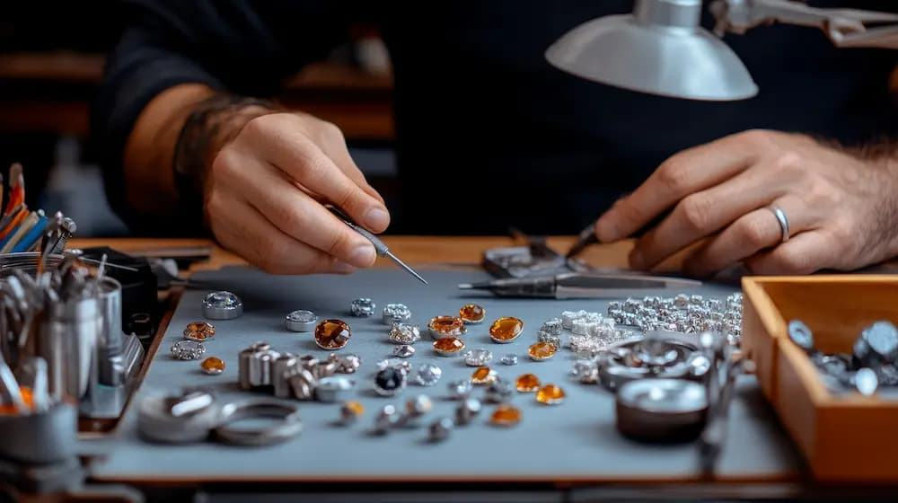
Ведите учет драгоценных материалов и заказов на реставрацию, фиксируйте состояние изделий при приемке и отправляйте счета по платежной ссылке.
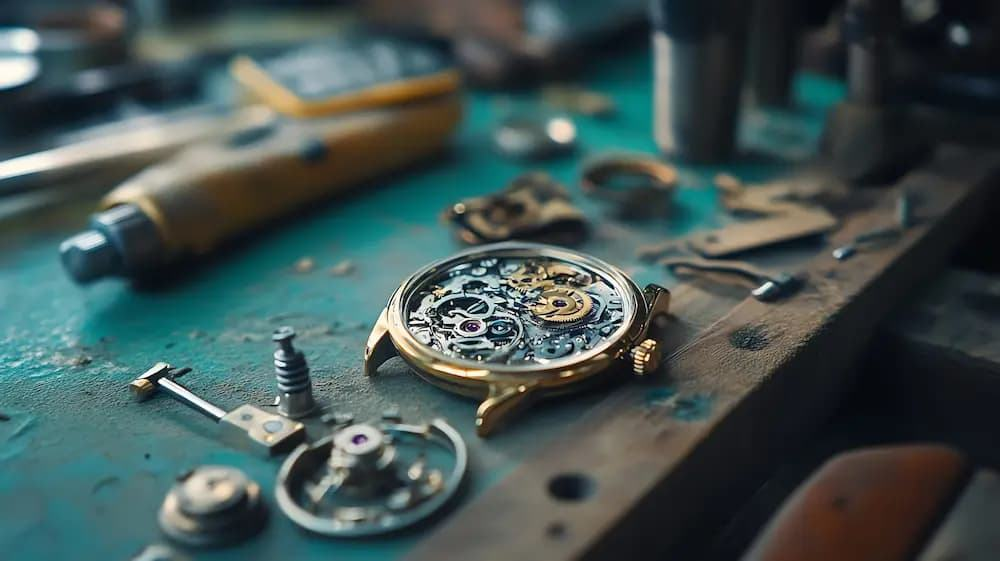
Обеспечьте удобство и точность в услугах по ремонту часов благодаря быстрому и простому процессу оформления заказа.